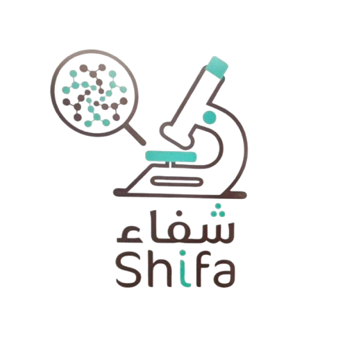
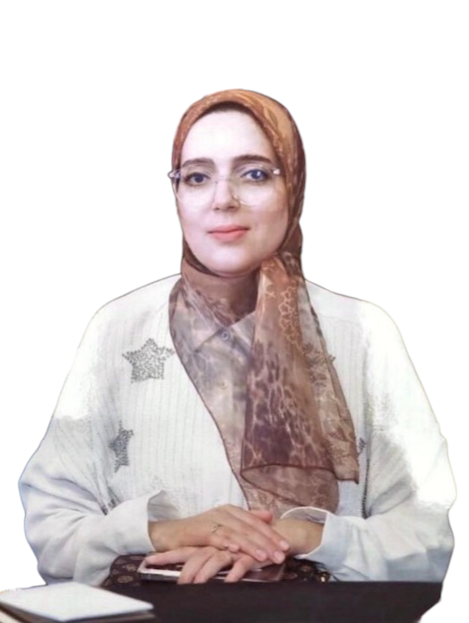

Dr Sanae Chahbouni

Dr Sanae Chahbouni est le médecin propriétaire du laboratoire Shifa et Ex. chef de service d'anatomie pathologique CHR de Fès. Elle détient une grande expertise grâce aux multiples expériences reçues lors de son internat au CHU Hassan II de Fès et au CHU de Lyon.
Sans compter ses innombrables formations continues multidisciplinaires telles que le DU Dermatopathologie de Paris et sa présence irrévocable aux congrès multinationaux.